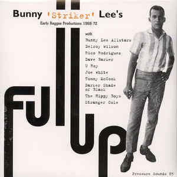
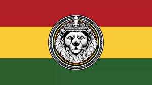
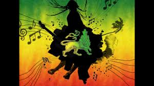

El reggae es un género musical que se desarrolló por primera vez en Jamaica hacia mediados de los años 1960. Aunque en ocasiones el término se utiliza de modo amplio para referirse a diferentes estilos de música jamaiquina, por reggae se entiende en sentido estricto un género musical específico que se originó como desarrollo de otros anteriores como el ska y el rocksteady. El reggae se caracteriza rítmicamente por un tipo de acentuación del off-beat, conocida como skank. Normalmente, el tiempo del reggae es más lento que el del ska3 y el rocksteady[cita requerida]. El reggae suele acentuar el segundo y cuarto pulso de cada compás, y utiliza la guitarra para poner o bien énfasis en el tercer pulso o para mantener el acorde desde el segundo hasta el cuarto. Es generalmente este "tercer beat", tanto por la velocidad como por la utilización de complejas líneas de bajo, lo que diferencia al reggae del rocksteady. The Wailers, una banda formada por Bob Marley, Peter Tosh y Bunny Wailer en 1963, son quizá el grupo más conocido que hizo la transición a través de las tres etapas la primera música popular jamaiquina: ska, rocksteady y reggae. Otros pioneros del reggae incluyen a Prince Buster, Desmond Dekker y Jackie Mittoo. El 29 de noviembre de 2018, la UNESCO declaró al Reggae como Patrimonio Inmaterial de la Humanidad.4
| Imagen | description | SudGeneros |
|---|---|---|
|  | Early reggae, también conocido como skinhead reggae debido a su popularidad dentro de esa subcultura inglesa de clase obrera, fue el primer reggae que existió después del Rocksteady, comenzó hacia finales de los años 60; a medida que la influencia de la música funk de sellos estadounidenses como Stax comenzó a penetrar en la forma de tocar de los músicos de reggae. Lo que caracteriza al early reggae del rocksteady es el órgano Hammond "burbujeante", un estilo percusivo de tocar que atrajo mayor atención hacia la subdivisión en ocho octavas dentro del groove. Los "skanks" de la guitarra en la segunda y cuarta nota del compás eran frecuentemente "doblados" en estudio utilizando efectos electrónicos de eco, complementando de ese modo la sensación de doble-tiempo del órgano. En general se daba mayor énfasis al groove de la música. La creciente tendencia en la época de grabar una "versión" en la cara B del sencillo produjo, además, innumerables instrumentales lideradas por vientos o el órgano. | Early reggae |
|  | Roots reggae es un tipo de música espiritual cuyas letras se dedican predominantemente a enaltecer a Jah (Dios). Entre los temas más recurrentes se encuentran la pobreza y la resistencia al gobierno y a la opresión racial. Muchas de las canciones de Bob Marley y de Peter Tosh pueden considerarse roots reggae. La cima creativa del roots reggae se dio hacia finales de los años 1970 con cantantes como Burning Spear, Gregory Isaacs, Freddie McGregor, Johnny Clarke, Horace Andy, Ijahman Levi, Barrington Levy, Big Youth y Linval Thompson, y bandas como Culture, Israel Vibration, The Meditations y Misty in Roots, mano a mano con productores como Lee 'Scratch' Perry y Coxsone Dodd. Musicalmente, en la canción "Roots, Rock, Reggae" Marley concibió un nuevo estilo de música "off beat" con un compás de seis beats, donde el skank de la guitarra tiene lugar en el cuarto y sexto beat. Aunque totalmente separado de los ritmos del ska, rocksteady, reggae, skank, flyers, rockers y otros estilos, este ritmo único está tan asociado a Marley que muy pocos otros lo adoptaron. . | Roots reggae |
|  | El dub es un género de reggae desarrollado en sus primeros tiempos por productores de estudio como King Tubby o Lee Perry. Se caracteriza por basarse en la remezcla (remix) de material previamente grabado, y por dar un particular énfasis a la batería y la línea de bajo. Las técnicas utilizadas provocaban en el oyente sensaciones viscerales, descritas por Tubby como "un volcán en tu cabeza".17 Augustus Pablo y Mikey Dread fueron otros importantes proponentes de este estilo. | Dub Reggae |
El reggae se desarrolló a partir del rocksteady en los años 1960. El cambio del rocksteady al reggae es ilustrada por el empleo del shuffle en el órgano, cuyo pionero fue Bob Marley. Este rasgo ya aparecía en algunos sencillos de transición como "Say What You're Saying" (1967) de Clancy Eccles o "People Funny Boy" (1968) de Lee "Scratch" Perry. El tema "Long Shot Bus' Me Bet" publicado por el grupo The Pioneers en 1967 es considerado como el ejemplo grabado más temprano del nuevo sonido que pronto sería conocido como reggae.16 Es en los comienzos de 1968 cuando los primeros discos de reggae genuino fueron publicados: "Nanny Goat" de Larry Marshall y "No More Heartaches" de The Beltones. El hit "Hold Me Tight" del artista estadounidense Johnny Nash de 1968 ha sido reconocido como el primero en poner el reggae en las listas de éxitos de Estados Unidos. Otros pioneros del reggae incluyen a Prince Buster, Desmond Dekker y Jackie Mittoo y The Wailers, una banda formada por Bob Marley, Peter Tosh y Bunny Wailer.
Aunque poderosamente influenciada por el mento y el calipso tradicionales, el jazz estadounidense y el primer rhythm and blues, el reggae es deudor directo en su origen de los diferentes desarrollos que tuvieron lugar en el ska y el rocksteady durante los años 1960 en Jamaica. Uno de los individuos que más contribuyeron a este desarrollo fue Count Ossie.1112 El reggae llega a Inglaterra por cuenta de los miles de inmigrantes que provienen de Jamaica, antigua colonia británica, y que empiezan a difundir su música y a relacionarse con obreros blancos que adoptan esa música. Incluso, el movimiento skinhead adoptó al 'ska, y posteriormente al reggae, como su música propia y a esto también surge la "Gran guerra del reggae". El ska surgió en los estudios de Jamaica alrededor de 1959. Se desarrolló a partir del mento.13 El ska se caracteriza por un tipo de línea de bajo llamado walking bass o "bajo galopante", ritmos de guitarra o piano acentuados en el offbeat, y en ocasiones riffs de viento similares a los del jazz. Además de ser muy popular dentro de la subcultura jamaiquina de los rude boys, hacia 1964 también había ganado una larga audiencia en la cultura mod inglesa.
Mira los mejores imagenes. Exitos